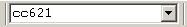

utilisez les boutons et  .
.
ou les raccourcis clavier F3 et Shift+F3.
Pour rechercher un élément dans l’arbre :
tapez le texte à rechercher dans la boîte Chercher située au milieu de la barre d’outils puis validez par Entrée.

Sélectionnez le choix Chercher du menu Rechercher ou cliquez sur le bouton .
Pour passer à l’occurrence suivante ou précédente,
utilisez les boutons et  .
.
ou les raccourcis clavier F3 et Shift+F3.